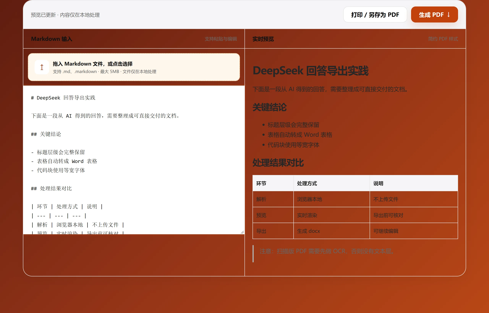

编辑 Markdown
粘贴或修改 AI 生成的内容，保留原有的文档层级。
免费在线工具
将 AI 生成的 Markdown 内容快速转换为清晰、便于分享的 PDF 文档。无需登录，文件仅在你的浏览器中处理。

工具说明
粘贴或修改 AI 生成的内容，保留原有的文档层级。
在导出前确认标题、列表、引用和代码块的展示效果。
一键导出 A4 PDF，方便存档、打印与分享。
常见问题
基础转换无需注册，也不会将内容上传至服务器。
可以。将 DeepSeek、ChatGPT 等平台生成的 Markdown 粘贴到工具中即可导出 PDF。
不需要。预览和 PDF 导出均在浏览器本地完成。
支持常用 Markdown 的标题、列表、表格、引用和代码块。
第一版默认使用简约的 A4 纵向文档样式，后续将增加更多模板。
可以。基础 Markdown 转 PDF 功能免费使用，无需登录。
适用场景
对方打开是为了读，不会误改版式，也不需要装任何软件。
A4 分页固定，几个月后打开排版仍然一致。
内容确认后导出 PDF，等于把「这一版已定」这件事说清楚。
限制
当前只输出 A4 纵向，横版和自定义页边距还不能设置。
图片不在复制的文本里，导出后不会出现在 PDF 中。
正文宽度约 186 mm，列数多的表会被压缩。
其他工具